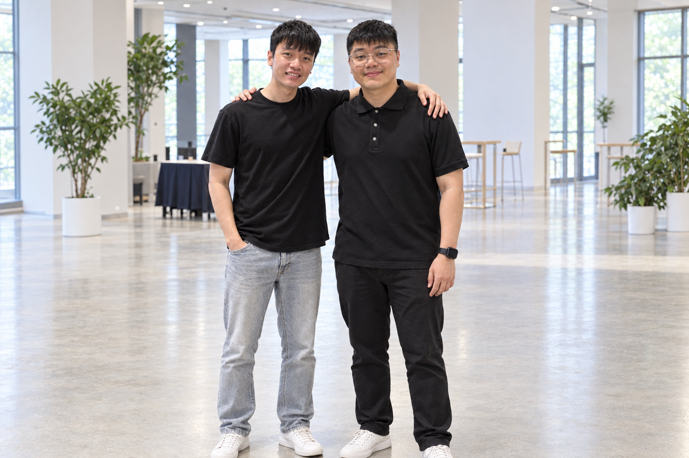

Thomas Liem
TechBuilds the whole app, the tool and everything around it.

SSihatAIBuilds the whole app, the tool and everything around it.
Runs the demo, and covers the UI, UX, docs, and pitch deck.
A scan, a lab report, and a symptom usually show up separately.
SihatAI turns them into one report the doctor can check and the patient can read. The language stays plain, so the report can be understood easily even without special medical knowledge.
Malaysian clinics are short of specialists. Scans and lab reports pile up, and patients often leave without knowing what the report means. We joined this track to work on that problem.